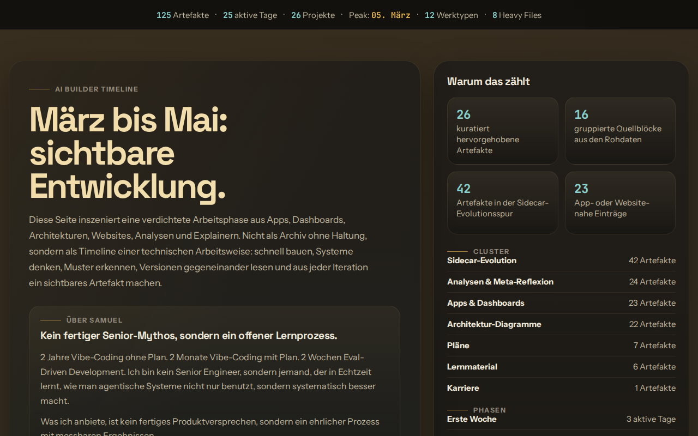
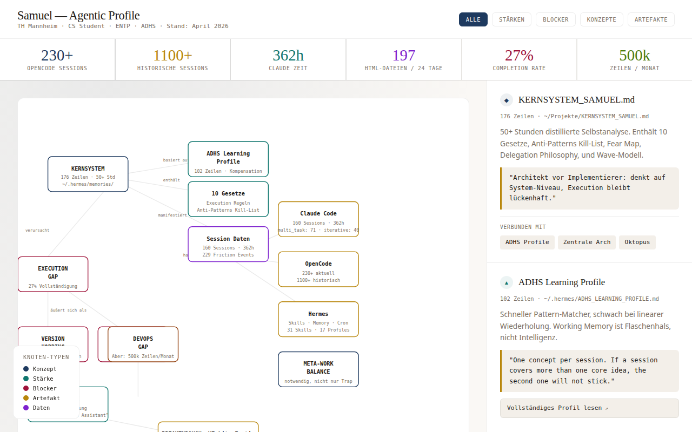

What is proven enough to say
Samuel has used real agentic systems for his own work, exposed breakdowns such as scope drift, wrong assumptions, weak verification, and overload, then converted those breakdowns into HAI controls.
Not from a theory of agents. From building systems, watching them break, and learning how humans can take control back.
Did Samuel really work with agents? Yes — these artifacts come from real local agent systems, runs, and owner-control work, not from a slide deck.
Can he control it? The point of every artifact here is the boundary: what the agent did, what the human decided, and how it was verified.
Is this more than AI hype? Judge it on the evidence below, not on the claims.
The claim here is deliberately narrow. This page proves lived practice and method formation. It does not pretend to be customer ROI data.
Samuel has used real agentic systems for his own work, exposed breakdowns such as scope drift, wrong assumptions, weak verification, and overload, then converted those breakdowns into HAI controls.
This is not external customer proof, not a universal model benchmark, and not a promise that every workflow needs the same system. The transferable claim is the method: make agent work visible, gated, owned, and verifiable.
Each case answers the same question in sequence: can Samuel see the problem, bound the agent role, and then produce transfer through his own decisions?
PortfolioTimeline turned a dense local build trail into a public-safe evidence surface. The point is not volume. The point is that agentic output can be sorted, inspected, and explained instead of living as private chaos.

Sidecar and the Tripwire Map are control work: read-before-edit rules, ambiguity gates, verification gates, commit approval, resource limits, and owner decisions. That is the core HAI lesson: the human needs operating boundaries, not just automation.

MetaMetaMeta and the Claude Insights timeline separate observations from evidence, task-local claims from transfer claims, and product proof from method proof. That is why HAI does not have to overclaim to be useful.

In the ADS study proof, he kept the decision loop with the human while using agents as bounded tooling for structure and interactive workflows. The visible artifacts are the study pages themselves and the transfer traces they expose.
The deepest lesson from the local system is simple: do not begin with an architecture. Begin with one observable step.
What must become easier, faster, safer, or clearer for the human?
A file, log, screenshot, test, response, run, or decision that can be checked.
No vague progress. Either the artifact supports the next step, breaks it, or needs better measurement.
No dashboard, swarm, refactor, or framework until a real artifact demands it.
Bring one workflow where context gets lost, agents overproduce, checks are weak, ownership is unclear, or the system feels too hard to trust. HAI turns that into a bounded setup: visible steps, gates, owner decisions, and verification.
Bring one messy agent workflow and see whether HAI fits it.